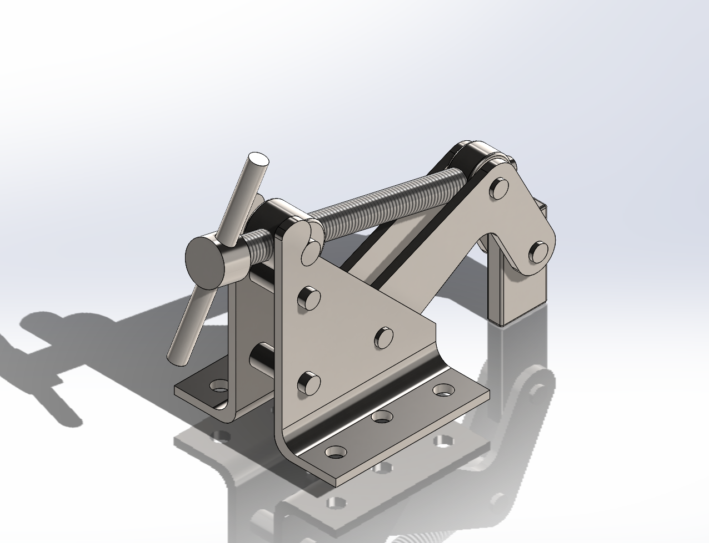

Mechanical Design • SOLIDWORKS • CAD Modeling
Designed and modeled a custom screw-driven clamping mechanism in SOLIDWORKS that converts rotational input into controlled linear clamping motion for secure and repeatable workpiece positioning.
Mechanical Design • CAD Assembly
SOLIDWORKS
Lead Screw • Steel Plates • Fasteners • Bearings
Mechanism Design • Motion Conversion • Assembly Modeling
This project involved designing a precision clamping mechanism that translates rotational input from a lead screw into controlled linear motion for secure workpiece positioning. The design was developed entirely in SOLIDWORKS with attention to motion conversion principles, assembly constraints, and manufacturability. The mechanism demonstrates understanding of mechanical advantage, tolerance stacking, and design for assembly.

Complete SOLIDWORKS project including all part files, assemblies, and engineering drawings for the custom screw-driven clamping mechanism.
Download ZIP